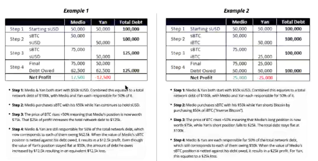
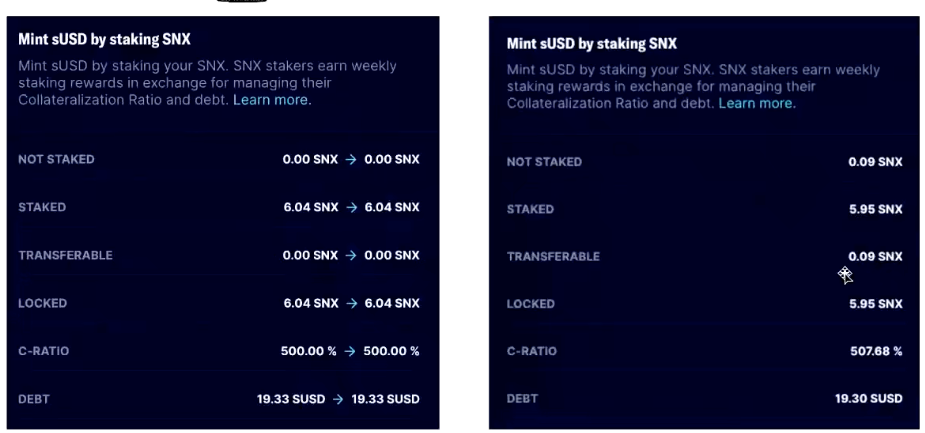

Synthetix 深度解析：去中心化合成资产协议
Synthetix 深度解析：去中心化合成资产协议
引言
Synthetix 是以太坊上的一个去中心化合成资产协议，旨在为用户提供无需持有实际资产即可获得各种资产价格敞口的能力。通过抵押原生代币 SNX，用户可以生成各种合成资产（Synths），包括法币、商品、加密货币等。Synthetix 的独特模型使其既没有流动性问题，也没有滑点，为用户提供了高效的交易体验。
本文将深入探讨 Synthetix 的工作原理、优势、激励机制、与其他协议的合作关系，以及其存在的风险和挑战。
一、Synthetix 的模型解析
1. 借贷与交易所的融合
Synthetix 结合了 抵押借贷 和 去中心化交易所 的功能。
- 抵押借贷：用户通过抵押 SNX，可以生成合成资产（Synths），本质上是以超额抵押的方式借出 Synths。
- 交易所功能：用户可以在 Synthetix.Exchange 上无滑点地交易不同的 Synths，实现各种资产之间的兑换。
2. 合成资产的生成与销毁
- 铸造（Minting）：用户抵押 SNX，按照 500% 的抵押率 超额抵押，铸造等值的 sUSD。例如，抵押价值 $10,000 的 SNX，可以铸造 $2,000 的 sUSD。
- 销毁（Burning）：用户需要销毁先前铸造的 sUSD，才能赎回抵押的 SNX。这类似于借贷协议中的还款过程。
3. 激励机制
- 交易手续费：每笔 Synths 交易会收取 0.1% - 1% 的手续费，按照不同的资产类别而定。收取的手续费会分配给 SNX 的质押者。
- 通胀奖励：Synthetix 有一个通胀模型，向质押者分发新的 SNX 代币。目前，年化通胀率最终将降至 2.5%，奖励按周发放。
二、Synthetix 的优势
1. 无滑点与无限流动性
- 无滑点交易：由于交易对手是协议本身，用户可以以预言机提供的市场价格进行交易，而不受流动性深度的限制。
- 无限流动性：用户无需担心市场的买卖盘深度，可以任意规模地交易 Synths。
2. 无摩擦地获取各种资产敞口
- 无需持有底层资产：用户可以通过持有合成资产，获得对法币、黄金、股票等资产的价格敞口，而无需实际持有这些资产。
- 现金结算：所有交易都是现金结算，无需处理实物交割，降低了交易复杂性和风险。
3. 天然的对冲平台
- 多样化的资产选择：提供了丰富的合成资产，包括反向（Inverse）资产，方便用户进行对冲和套利操作。
三、Synthetix 的工作机制
1. SNX 质押与合成资产生成
- 抵押率：系统要求质押者维持 500% 的抵押率。这意味着，铸造 $1 的 sUSD，需要抵押 $5 价值的 SNX。
- 超额抵押的原因：高抵押率有助于抵御市场波动，确保系统的安全性和稳定性。
2. 债务池与个人债务
- 集体债务：所有质押者共同组成一个债务池，系统记录总的 Synths 供应量，即总债务。
- 个人债务：每个质押者的债务量是总债务的一个比例，取决于其铸造的 Synths 数量。
- 债务的波动性：由于 Synths 的价格会波动，质押者的债务也会随之变化。

3. 交易机制
- 无对手方交易：在 Synthetix.Exchange 上，交易者无需寻找对手方，所有交易都由协议处理。
- 预言机价格：交易价格基于链上预言机提供的实时市场价格。
- 交易过程：当用户将一种 Synth 换成另一种 Synth，实际上是销毁了一种 Synth，铸造了另一种 Synth。 
四、与其他协议的合作
1. 与 Curve 的合作
- sUSD 流动性池：Synthetix 与 Curve 合作，提供 sUSD 与其他稳定币的流动性池。
- 优势：
- 无滑点交易：利用 Curve 的稳定币交易曲线，实现低滑点交易。
- 高交易量：增加了 sUSD 的使用需求和交易量。
- 手续费高的问题：虽然交易无滑点，但手续费相对较高。
五、存在的缺点与挑战
1. 市场共识与信任
- SNX 价格波动：SNX 的价格从高点 $50 下降到 $2，反映了市场信心的不足。
- 质押者的风险：质押者需要承担债务波动的风险，如果系统中的 Synths 总债务增加，质押者的个人债务也会增加。
2. 仅限于 Synths 系列资产
- 资产范围有限：目前仅支持 s 系列的合成资产，无法直接支持更广泛的资产类别。
3. 质押者的负债波动风险
- 债务不固定：质押者的债务会根据 Synths 的价格波动和供应量变化而变化。
- 还债压力：如果质押者的抵押率低于 500%，将无法领取奖励，需要追加抵押或销毁 Synths 来提高抵押率。
六、激励机制详解
1. 为什么 SNX 持有者要质押
- 交易手续费分成：质押者可以按比例获得系统收取的交易手续费。
- 通胀奖励：质押者每周可获得新的 SNX 代币作为奖励，年化通胀率最终将稳定在 2.5%。
2. 质押与借贷的关系
- 抵押即借贷：在 Synthetix 中，质押 SNX 就是借出 sUSD，没有只质押不借贷的选项。
- 债务的承担：质押者需要承担系统的债务波动风险。
七、与 Uniswap 等协议的区别
- Uniswap 的 LP：在 Uniswap 中，流动性提供者（LP）承担的是交易者套利带来的无常损失，风险主要来自价格波动。
- Synthetix 的质押者：在 Synthetix 中，质押者不仅面临交易者的交易带来的债务波动，还要承担其他质押者行为带来的集体债务变化。
八、债务与抵押率管理
1. 抵押率（C-Ratio）
- 定义：抵押资产价值与债务的比率。
- 要求：系统要求维持至少 500% 的抵押率，否则无法领取奖励。
2. 债务的变化因素
- 合成资产价格：Synths 的市场价格波动会影响债务的大小。
- 合成资产供应量：系统中 Synths 的总供应量变化也会影响债务。
3. 债务示例
假设系统中只有两位质押者，A 和 B：
- A 质押 $10,000 的 SNX，铸造 $2,000 的 sUSD
- B 质押 $5,000 的 SNX，铸造 $1,000 的 sUSD
- 总债务为 $3,000，A 的债务占 66.7%，B 的债务占 33.3%
如果 Synths 价格波动，导致总债务变为 $4,000，那么：
- A 的债务为 $4,000 × 66.7% = $2,667
- B 的债务为 $4,000 × 33.3% = $1,333
质押者的债务增加，需要增加抵押或销毁 Synths 来维持抵押率。
九、风险与注意事项
1. 质押者的风险
- 债务增加：市场波动可能导致债务增加，质押者需要应对抵押率下降的问题。
- SNX 价格下跌：SNX 价格下跌会降低抵押品的价值，增加清算风险。
2. 市场需求与流动性
- Synths 的需求：如果市场对 Synths 的需求不足，可能导致系统效率下降。
- 市场共识：Synthetix 的稳定运行依赖于市场对其模型和代币的信任。
十、结论
Synthetix 作为去中心化合成资产协议，为用户提供了无需持有实际资产即可获得各种资产敞口的能力，其独特的无滑点交易和无限流动性为 DeFi 世界带来了创新。然而，其模型也存在一定的风险和挑战，尤其是对质押者而言，需要承担债务波动和 SNX 价格波动的风险。
未来，Synthetix 的发展需要更多的市场共识和生态支持，以及对风险的有效管理。对于投资者和用户，深入了解其工作原理和风险机制，谨慎参与，是十分必要的。
参考资料
Synthetix 深度解析：去中心化合成资产协议
http://navafee.github.io./syntheix/